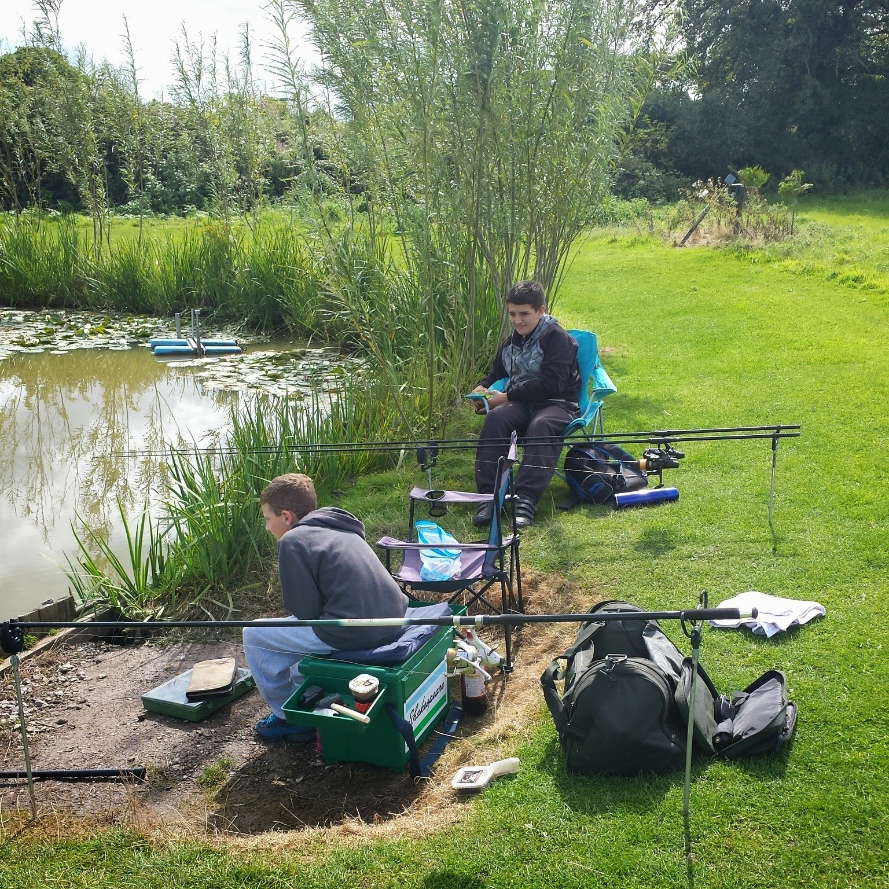

This time Leon wanted to join me fishing so we drove down and started
fishing he struggled with casting so I taught him how to and we had some
really good results.

Keaton and Leon waiting for the fish to start biting.
We caught a few that day these were the best ones a 1lb Crucian Carp,
3.5lb Bream and a 4.5lb Mirror Carp